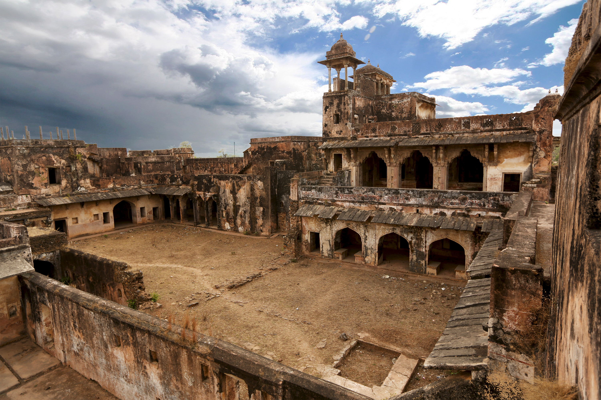
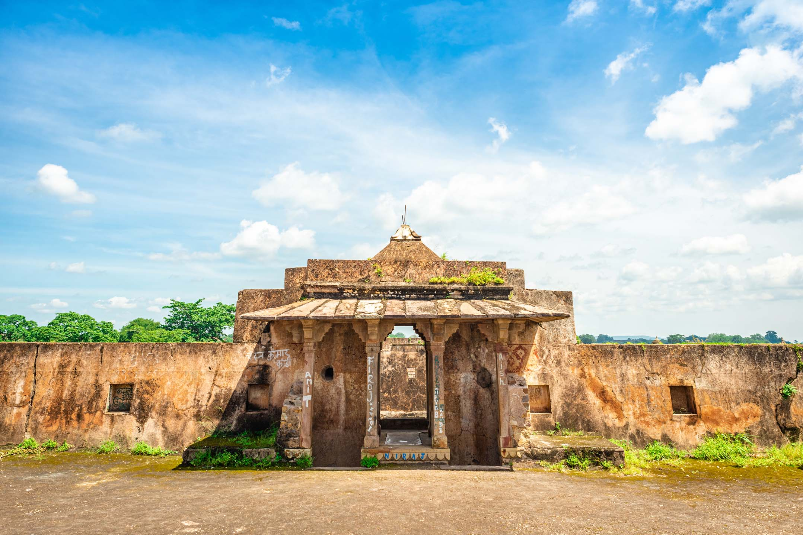
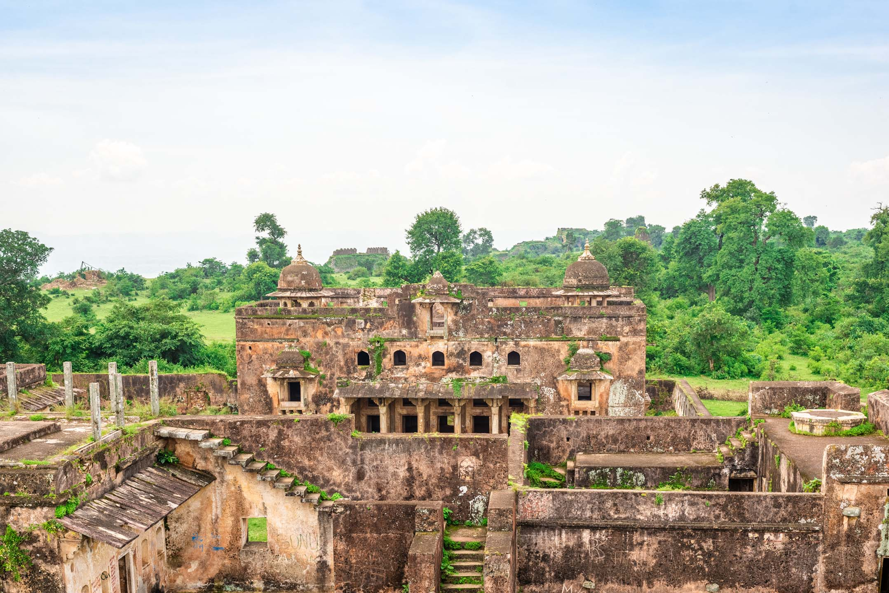
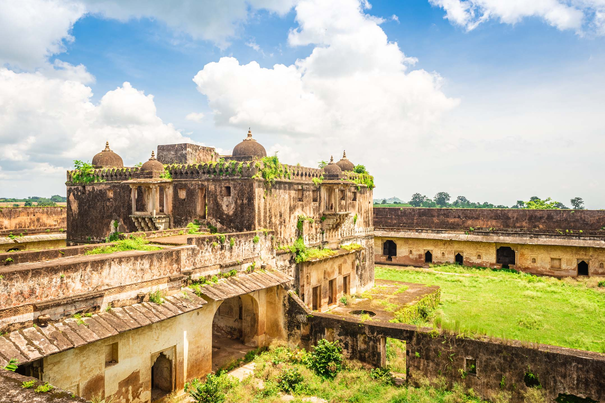

About Rohtasgarh Fort
Rohtasgarh crowns a forested plateau above the Son valley in Rohtas district, near Sasaram. Tradition links the name to Rohitashva, son of King Harishchandra. In 1539 Sher Shah Suri took the fort, and it later served Mughal governors including Raja Man Singh.
The plateau is protected by cliffs and a chain of gates. Palaces, a Jama Masjid, temples, and tanks still stand among the trees, spread across several square kilometres of hilltop.
Historical Significance
Because of its height and natural defences, Rohtasgarh was one of the major strongholds of eastern India. After Sher Shah, Akbar's general Man Singh used it as a headquarters. The garrison later declined, but the ruins remain among Bihar's largest medieval fort complexes.
Architecture
Approaches such as the Hathiya Pol lead into a landscape of ramparts, the palaces associated with Man Singh, the Aina Mahal, the 17th-century Jama Masjid, and reservoirs that once supplied the fort. Much of the plateau is now woodland, so visiting feels like a hill walk as much as a monument tour.




Visitor Information
Most visitors travel via Sasaram. The climb or jeep track depends on the route open that day, so start early, carry water, and plan a full day. October to March is the most comfortable season; monsoon trails can be slippery.
← Back to Destinations